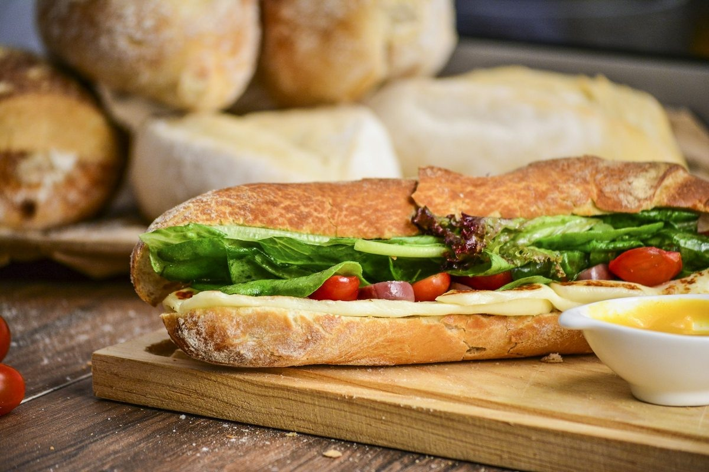

190 S LaSalle Street, Suite 2800, Chicago, IL 60603, United States
+1-877-667-7705
Our private tasting salon is situated in the financial heart of Chicago at 190 S LaSalle Street, Suite 2800, Chicago, IL 60603, United States. We invite pastry chefs, hospitality sommeliers, and private patrons for structured vintage stone fruit flights.
Physical Salon: 190 S LaSalle Street, Suite 2800, Chicago, IL 60603, United States
Telephone Hotline: +1-877-667-7705
Electronic Mail: inquiries@apricotvelvet.com
Private Hours: Monday – Friday: 9:00 AM – 6:00 PM CST
